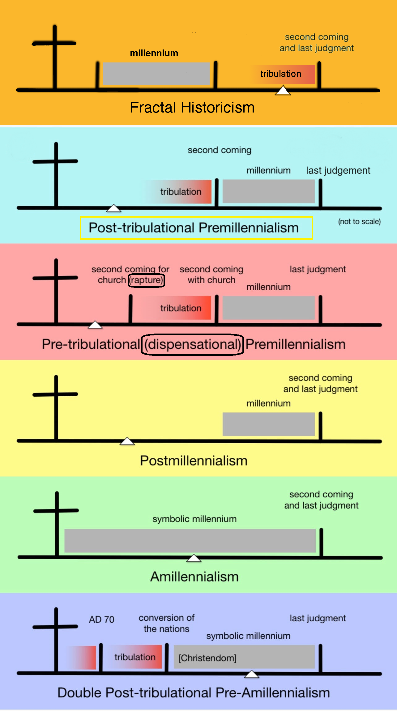

The End Times

Fractal Historicism
This article introduces Fractal Historicism, the system of eschatology described and developed on this website. The above diagram compares it to a few alternate systems. The system is similar to classical Historicism, which Wikipedia describes with these words:
Historicism is a method of interpretation in Christian eschatology which associates biblical prophecies with actual historical events and identifies symbolic beings with historical persons or societies; it has been applied to the Book of Revelation by many writers. The Historicist view follows a straight line of continuous fulfillment of prophecy which starts in Daniel's time and goes through John of Patmos' writing of the Book of Revelation all the way to the Second Coming of Jesus Christ.
Many in the early church proposed Historicist ideas, including Justin Martyr, Josephus, Irenaeus, Tertullian, Clement of Alexandria, Jerome and Athanasius. The Protestant Reformation revived interest in that approach to understanding Bible prophecy. Among those who advocated Historicism were John Wycliffe, Martin Luther, John Calvin, Thomas Cranmer, John Thomas, John Knox, Roger Williams, Cotton Mather, Jonathan Edwards, and John Wesley. I depart from those esteemed reformers in not identifying the Roman Catholic Pope as the anti-Christ. In fact, I make no attempt to identify the Antichrist, as I believe his identity still remains hidden.
In an important regard, my system adopts ideas from the Puritan Thomas Brightman, who was the first to propose a historicist interpretation of the Seven Churches of Revelation. He taught that each church corresponds to a different era of church history. However, I propose start and end years for the eras of the more recent churches that differ from his dates and those of his successors. (For a detailed analysis, see the chapter "Seven Churches for Seven Eras" in Peace, like Solomon Never Knew.)
The Seventh Day Adventists hold to a form of Historicism. Their traditional belief is that the first six seals of Revelation were opened prior to 1844 AD. In Fractal Historicism, only three seals had been opened by that time and a fourth was opened in the Twentieth Century. The fifth seal is set to open later in this century.
Fractal Historicism further deviates from earlier forms of Historicism by applying the patterns of prophecy like fractals. The same patterns may repeat at shorter and longer timescales.
In the above diagram, the white triangle indicates "now", the present day. From the diagram you can see one of the starkest differences between this system and most others. Fractal Historicism assumes that the Millennial Kingdom when Christ rules over the nations refers to a literal 1,000 year period unlike the amillennial systems. Then, in contrast to the remaining systems, it assumes that the millennium has already come and gone and the tribulation already begun.
After the Reformation, other theories of eschatology displaced it in many churches. Premillennial Dispensationalism is one popular system.
Approaches not shown on the diagram include Futurism, Preterism and Idealism, which are not single systems but instead categories of systems.
- Idealism goes by many names, like the spiritual approach, allegorical approach, and nonliteral approach. It sees all or most of Revelation's imagery as symbolic instead of describing real events. It is a feature of amillennialism. Adherents include Karl Barth and Jacques Ellul (whom I much enjoyed reading years ago). Concerning Amillennialism in particular, one of the earliest and most influential advocates was Augustine of Hippo, who communicated his ideas in City of God.
- Preterism holds that most or all of the events prophesied in Daniel, the Olivet Discourse and Revelation were fulfilled by AD 70 and the close of the Apostolic Age. A Jesuit, Luis de Alcasar (1554–1613), wrote the first systematic preterist exposition of prophecy Vestigatio arcani sensus in Apocalypsi. It was published during the Counter-Reformation to defend the Catholic Church against Protestant attacks that relied upon the Historicist interpretation.
- Futurism treats Revelation, Ezekiel, and Daniel as addressing future events in multiple senses: literal, physical, apocalyptic, and global. This category of belief includes premillennialism and dispensationalism. Irenaeus in the early church held views in this category. The most influential early modern proponents were the Catholic Jesuits Manuel Lacunza (1731–1801) and Francisco Ribera (1537–1591). Their motive was to take a different tack to defend the Catholic Church against Historicism. The futurist view assigns all or most prophecy to the future, shortly before the Second Coming. Some parts of the Bible that this interpretation addresses are Daniel, Isaiah 2:11–22, and 1 Thessalonians 4:15–5:11.
If you take in all of these systems, you see these poles of interpretation:
Timing:
- All or most prophesied events occurred in the past
- All or most prophesied events still lie in the future, bunched up into a short period before the end
- Events are distributed throughout history, with many having already occurred, some happening now, and others remaining for a future fulfillment
Historicity:
- Events are figurative and spiritual, not corresponding to definite events and persons
- Events are literal (though coded)
Millennium:
- The millennial reign of Christ describes the slow improvement of the world under the influence of the church, not a literal thousand years
- The millennial reign of Christ occurs as "a parallel and contemporaneous development of good and evil — God’s kingdom and Satan’s kingdom — in this world, which will continue until the second coming of Christ" (to quote Loraine Boettner in describing Amillennialism)
- The millennial reign of Christ will be a literal future kingdom lasting a literal thousand years that begins when Jesus Christ returns in his body visibly
- The millennial reign of Christ was a literal kingdom lasting a literal thousand years, but it did not include Christ returning visibly. He reigned through the church as his agents.
Fractal Historicism assumes the last choice of possibilities in each of the three above categories. To my knowledge, no other system besides that of Ellis Skolfield makes an identical set of choices. The crux of the matter is our understanding of the millennium. It is essential if one is to preserve the vital character of Historicism. In the early church, Historicism was an attractive possibility because the major events all lay in the future. There was not yet a series of historical events that might match one version of Historicism but contradict another. During the Reformation, conditions were again favorable to hold a Historicist view. But in the centuries since then, the original Historicist view slowly crumbled. The reason is that one cannot easily believe in a literal millennium ruled by a visible Christ after the great apostasy begins. For a brief time, a great proportion of the world was ruled by Christian nations. No more. One by one, countries formerly Christian have abandoned their faith. That is consistent with Satan going out to deceive the nations (Revelation 20:8), an event that commences AFTER the millennium, after Satan is unbound. Only by placing the millennial kingdom in the past can we establish a theology consistent with history and so rescue Historicism. To do that, however we have to agree with the Idealists that the reign of Christ was symbolic but with the Millennialists that the time period and political existence was literal. Jesus said that he would be with us, even to the end of the age. It is only in that spiritual sense that Jesus returned to rule his kingdom; his bodily return will happen only once, at the very end. There is no need for a "secret rapture" when Christ comes halfway to meet the church but doesn't actually return. (A "secret rapture" is not ruled out. However, the only reason this idea occurred to theologians was as a means of rescuing their system from a contradiction. You can't have Jesus showing up for the rapture before the Great Tribulation if Christ is not supposed to return until after it is over!)
On another pole I have done less research. That is the binding and loosing of Satan. Amillennialists believe that Satan has been bound and cannot stop the advance of Christ's kingdom. Other systems may believe that Satan has been bound already or that it may await the supposed future coming of the Millennium. In Fractal Historicism, Satan was bound for a thousand years, but has since been loosed. This is a critical difference.
If God intended to offer the church the most guidance, He would supply information rich prophecies that could be verified against real history. Such prophecies could then be used as an apologetic tool that proves the miraculous accuracy of the Bible as well as to prepare believers for the trials and opportunities to come. Such prophecies could bolster our faith as we see them unfold over time. Such prophecies would shout that God has a plan and it is on schedule. The problem with such prophecies is that if you interpret them wrongly, unbelievers ridicule the church and the faith of many is threatened. Allegorical, idealistic views are safer. You can't prove or disprove them. Getting a Historicist scheme right requires wisdom of a level that no one in the church has ever possessed, else we would see the proof in the accuracy by which their theology matches world history. Naturally, I will be arguing that such a system is what I have discovered, led by a wisdom not my own.
I alluded to motives above, but let's bring them front and center.
- Protestant Reformers developed their brand of Historicism to attack the Roman Catholic Church and label it the Antichrist.
- Roman Catholics developed both Futurism and Preterism to defend their church against the attacks of Historicism.
- Amillennialism's slow development over a millennia from Augustine to Aquinas reflected a growing pessimism inside the church. Hope that the church could make much headway toward reforming the world grew dim. This process is outlined in Traces of Defeatism: A Critique Of Amillennialism by Kendall Lankford.
A mix of defeatism, fear, hatred, judgment, and defensiveness fueled the development of at least four of these systems of eschatology. Such feelings also attended the first few decades of my personal search for the truth about the end times. Only as God turned me from despair to hope and from anger to forgiveness was I able to come to a new understanding. That journey is essential if you are to understand God's ways.
Summary of Advantages of Fractal Historicism
Is a trumpet blown in a city,
and the people are not afraid?
Does disaster come to a city,
unless the Lord has done it?
For the Lord God does nothing
without revealing his secret
to his servants the prophets.
- Amos 3:6-7
- Gapless. Other systems clump most prophesied events either at the beginning (during the age of the apostles) or end (in the last few years before Christ returns). In the spirit of Amos 3, this system has no gaps. The Lord literally did NOTHING without informing His servants the prophets. Thus EVERY century of history since Solomon is targeted by multiple prophecies.
- More Biblically Comprehensive. Incorporates prophecies and constraints from parts of the Bible not included in any of the other eschatological systems. Among the books included in the structure are Job, Ecclesiastes, Proverbs and Song of Songs. Also, greater use is made of the Ten Commandments and other parts of the Law. Hundreds of prophecies never before noticed have been discovered and included.
- Supplies an Expansive Integrative Framework. Other systems rely on pairing a small set of qualitative symbols and phrases to connect the pieces of their respective frameworks. Fractal Historicism has multiple overlapping and interlocking patterns: the Growth, Harvest, Motherhood, Law and Journey Patterns. The large, rich set of times and phases of these patterns define many connections with books throughout the Bible, allowing the majority of Scripture to be integrated into its scaffolding.
- Literal. The prophecies are tied to literal events, persons, organizations and nations, unlike the Idealist systems.
- Quantitative. Most events in its prophetic structures may be assigned a date with a precision of 120 years. For some the accuracy is to within fifty years.
- Presents a Coherent and Constructive Schema of History. The historical progression of events tells a story of civilizational advance. God is doing more than judge; He is reforming and teaching the world. The plagues both afflict the wicked and promote justice and human progress.
- Affirms the Immanence of God's Justice. Clocks related to the Ten Commandments show that God has systematically and consistently meted out justice in an ongoing basis. The Lord has been enforcing all ten in a logical, sequential order since the beginning. These cycles of judgment have been rigorously applied to the antediluvian world, Egypt, Israel, the Church and ultimately, against the whole world.
The rest of this article will focus on what Fractal Historicism is, not on comparing it to the other systems.
Time is Essential to Wisdom
“You, Lord, laid the foundation of the earth in the beginning,
and the heavens are the work of your hands;
they will perish, but you remain;
they will all wear out like a garment,
like a robe you will roll them up,
like a garment they will be changed.
But you are the same,
and your years will have no end.”
- Hebrews 1:10-12
Who does not approach the prospect of the world's end with ambivalence? The topic is dreary. Even so, post-apocalyptic movies and TV shows abound. The news is filled with warnings about climate change causing the seas to rise and deserts to spread. Strangely, these voices all take the wrong tack. They try to scare people with warnings in order to promote changes that will avert the end. Theirs is really a voice proclaiming a path to an endless future. That path is an illusion.
It is impossible for Christians to dodge the subject. The Bible devotes many words to the last days. We just don't understand them. One thing is clear: Christians expect it to be a happy ending - if you believe in Jesus. The end is set in stone by God and inescapable. Perhaps we may earn a reprieve, like when the shadow went back ten steps for King Hezekiah (2 Kings 20), but that will only delay the end a short while.
This explains why Christians must face the end, but why dilute a website on spiritual growth with musings about the apocalypse? The answer lies in Ecclesiastes. Solomon's opening chapter speaks of the many cycles of God's creation, natural and human. Then in the third chapter, he zooms in on the human cycles of life in the poem of the twenty-eight times. After revealing a little, Solomon tells us what we do not know:
He has made everything beautiful in its time.
Also, he has put eternity into man's heart,
yet so that he cannot find out what God has done
from the beginning to the end.
- Ecclesiastes 3:11
When God set eternity in the heart of man, He instilled an irresistible longing to know what lies ahead. This can be maddening, because like Solomon said, we do not know the works of God from beginning to end. We have forgotten most of what came before and cannot see what lies ahead. Isaiah tells us what this means:
Remember this and stand firm,
recall it to mind, you transgressors,
remember the former things of old;
for I am God, and there is no other;
I am God, and there is none like me,
declaring the end from the beginning
and from ancient times things not yet done,
saying,
‘My counsel shall stand,
and I will accomplish all my purpose...’
- Isaiah 46:8-10
This knowledge of past and future is one of the essential, distinguishing marks of God. It lies at the core of God's wisdom. In Proverbs, this is what Lady Wisdom has to say for herself:
The Lord possessed me at the beginning of his work,
the first of his acts of old.
Ages ago I was set up,
at the first, before the beginning of the earth.
- Proverbs 8:22-23
In place of "possessed", some use "fathered" or "created". This tells us that an essential characteristic of wisdom is that nothing precedes it, save God himself. It arrived first in time so can comprehend all time.
No account that seeks to explore wisdom can avoid time.
No account that seeks to explore time can avoid the time of the end.
My Struggles with Time
Before proceeding, I will share the progression of my attitude towards the issue of the End Times over the course of my life. The reason is that there are many motives for seeking this knowledge and not all lead to the truth. As a teen, I was fascinated by time. I loved time travel stories and fantasy stories with prophecies of the future. Isaac Asimov's idea of using mathematics to predict the future as explored in his Foundation series gripped me. Alexis de Tocqueville's book Democracy in America astonished me. Around 1840, he predicted that the two great world powers in the twentieth century would be the United States and Russia. How I longed to understand history and politics so well that I could have such a keen vision of the future.
My view turned dark in college. I entered a decade of depression. A few years before I was saved, I only picked up the Bible twice. The first time was to read Revelation. It disturbed me. Then after I found the Lord, I read The Late Great Planet Earth by Hal Lindsey's, Gorbachev: Is He the Antichrist? and other books. To work things out for myself, I started a journal and began to study world history, looking for connections between the Bible and human events and so accept or reject the ideas in those books. The devastating meltdown at Chernobyl in 1986 didn't help. I was told that Chernobyl is the Russian word for wormwood, making that meltdown a sign of the plague of wormwood of Revelation 8:11.
A man spoke at our church about Revelation during this time. He had ideas about the future course of world events and when they might occur. Were his ideas well supported? I wasn't sure, so I asked him, "What is purpose of the plagues named in Revelation? Why those particular plagues?" He said he didn't know. I concluded that if he didn't know why, he couldn't know when. I disregarded everything he had said. This was an early sign that I was learning discernment. I began to question what other Christians were saying and gained a critical eye.
If you fill your mind with questionable ideas, what happens? In my case, years of nightmares. Dreams of the end of the world wrecked my sleep and destabilized my life. How can you plan your future if you fear you might not have one? By God's grace, through prayer and meditation on the Psalms and Isaiah I found release from the nightmares, as described in the article Dreams.
One reason the nightmares stuck around so long was that I didn't want to let go of them. As terrifying and debilitating as they were, they made me feel powerful. I began to advise other Christians based on my dreams, fancying myself a prophet. The only kind of prophet that I was was a false prophet. To admit that and repent of it was hard. The first consequence was that the dreams stopped. The second was that I lost a part of my identity that I cherished and gave me a sense of importance.
Almost two decades passed during which I gave little thought to the end times. Then in the mid 2000's I heard Johnny Cash's song "The Man Comes Around". My interest in the end times stirred once more. On the internet I came across several books and teaching notes about Daniel and Revelation by Bible scholar Ellis Skolfield. Skolfield attempted two things in his writings. First, he proposed his own ideas about what those books mean and how many events that they prophesied have already occurred, contradicting Premillennial Dispensationalism and other competing theories that claim those events remain in our future. Second, he uncovered many contradictions within the competing theories. The most striking was that the blowing of "the last trumpet" in 1 Corinthians 15:52 and "the seventh trumpet" in Revelation 11:15 refer to the same event. If the events that will occur when one is blown happen simultaneous with those slated to unfold when the other is blown, the timelines for those other theories are wrecked. For one, it makes the return of Christ, the raising of the dead and the rapture into one event. There will be no rapture before the millennial reign of Christ. There will be no release of Satan after Christ descends.
After reading his work several times and corresponding with the author by email, this is what I concluded.
- Skolfield's criticism of all other theories of Eschatology (i.e. the study of the end times) was devastating and correct.
- His ideas for a more accurate replacement for those theories had merit.
- His theory was incomplete.
- Some of his ways of handling Bible chronology and prophetic timelines were novel and consistent but lacking in support.
By the mid 2010's, where did this leave me? I had nothing. Neither my ideas nor the ideas of the most popular and respected scholars held water. I knew that believing and receiving guidance and comfort from the prophets concerning God's future plans is indispensable for a sane and productive faith. Wrong and inconsistent ideas do damage. If nature abhors a vacuum, so does my soul. I needed to find the truth. I also knew that to find the truth, I would have to research it for myself. I would have to study, compare and work out a consistent framework for history and eschatology. Skolfield said that he had studied the topic for thirty years. To accomplish this task would require time and discipline that I knew I didn't have. It would require knowledge of the Bible and history that I did not possess. The breadth of study would be huge. Taking all this in, I despaired of ever getting the answers that I craved. I surrendered. I again gave up trying. After thirty years of walking as a Christian, I felt no closer to finding an answer than when I started.
Soon after, my mother died. I turned to Job for comfort and threw myself into understanding the first book of the Bible to be written, instead of the last. Like Frost's "road not taken", that has made all the difference. By turning to the past, to the beginning, by coming to grips with mourning, I began to walk down another path. Instead of finding prophecies of the distant future, I found Job's prophecies of the coming of Christ. I saw salvation. I saw healing and growth and forgiveness and comfort. When I eventually turned my eyes to the end, I saw everything through a different lens. I saw discipleship, growth, and metamorphosis, not mere destruction. God has hidden the beauty and wonder of a message of glorious hope inside a tale of calamities. He constructed Revelation as an emotional riddle. The sheer horror blinds us to the meaning, making it nearly impossible to fit prophecy to history. However, once you see those latter days not as an aberration but as a logical extension of God's plans for all of time, the sharp discontinuity becomes a continuum and the irreconcilable can be reconciled.
That is a taste of the struggle that I passed through on the way to my current understanding. I have been humbled not once but several times along the way. To confess misusing God's gifts and His Word, to admit ignorance, weakness and inability and to accept my emptiness was torment. None of that makes my words useful. None of that proves my ideas true. However, if you seek knowledge about these matters from anyone else, make sure that they also have struggled and striven and surrendered. No one can swallow the scroll without absorbing its bitterness, not even the Apostle John:
And I took the little scroll
from the hand of the angel and ate it.
It was sweet as honey in my mouth,
but when I had eaten it my stomach was made bitter.
- Revelation 10:10
About thirty-five years ago I asked that man my question. He didn't know the purpose of the plagues of Revelation. I do - at least some of them. Did they judge? Yes. Did they destroy? Yes. But they also built. They also created and reformed the world. Most people who read Revelation see the death and destruction. They can't conceive that much of it describes events that have already occurred. Why? It is because history shows humanity progressing despite all the turmoil, wars, revolutions, famines and plagues. History just doesn't look bad enough to match up to what we think Revelation means. The final plagues will, but the early ones are concealed by acts of grace. When the final plagues which do match up arrive, the world will be taken by surprise. The precursors and early warnings that the inhabitants of the earth will assume have yet to arrive will have passed long before. Concertgoers awaiting the first trumpet blast will be met by the last.
Cross Section of Time
My books and the articles on this website about prophetic clocks marshal evidence to support this novel eschatological system. The articles in this section will sketch that system's outline. They will cut a cross section across many clocks to shine a light on key events in history. Each clock covers many eras - often thousands of years - hence many events, but with little detail. This section will show a few events but see what is said about each across many clocks, to emphasize how firmly God settled the date of each event. The interlocking passages are like transparencies overlaid to present a complete image. It is like the book I had as a child that showed the human body. One transparency showed bones, another the major organs, another blood vessels, and the last showed skin and hair. The superposition of all the layers showed what a person looks like.
Many other eschatological systems rely upon a few passages to establish the order and timing of key events. The timing in them is usually qualitative. In Fractal Historicism, there are over forty prophetic clocks. Key events show up in dozens of clocks. The timing is much more precise, with events slotted to within a century in most cases, and within decades in many.
This cross-sectional consistency of the system across a large swath of the Bible is a significant factor that favors the accuracy of Fractal Historicism and challenges the accuracy of the other systems. This system makes extensive use of Job, Ecclesiastes and Proverbs to form its scaffolding, then fits the prophetic books commonly treated by the other eschatological systems into it, like Daniel, Matthew and Job. Fractal Historicism has a consistent interpretation of those Bible books. The other systems make little or no reference to Job, Ecclesiastes and Proverbs. They fail to incorporate important data into their theories. As in science, the theory that provides a coherent interpretation of the greatest range of data is the strongest.
Now it is time to introduce the key events of the End Times. We shall see how they are sequenced and assigned to the proper time in history according to Fractal Historicism.
Events leading up to the End
When Christians talk about the End Times, what events are part of the conversation? Here are some prominent ones. They are divided in two groups: ones reflecting victories on God's side versus those reflecting victories on Satan's side. An attempt has been made to match like items. The one exception is pairing "The Restoration of Israel" with "The Blowing of the Seven Trumpets". The latter is not a victory for Satan, but for God, but it does relate to Israel. When Joshua led Israel into the Promised Land, the people marched around Jericho seven times blowing trumpets, then the walls came tumbling down.
These events are not listed in Chronological order according to this or any system.
| Favorable to Christians | Favorable to Satan |
|---|---|
| The Second Coming of Jesus Christ | The Rise of the Antichrist (an evil world leader who serves Satan) |
| The Binding of Satan (when the enemy's power is curtailed) |
The Loosing of Satan (after being imprisoned for a thousand years) |
| The Proclamation of the Gospel to the Whole World | The Great Apostasy (when many people abandon Christianity) |
| The Millennial Kingdom (when Jesus rules the world for a thousand years, whether literally or figuratively) |
The Dragons: Behemoth and Leviathan (two empires ruled by Satan) |
| The Rapture (when some living Christians are supernaturally taken from this world by Jesus, thus escaping further suffering) |
The Great Tribulation (a time of suffering and persecution for Christians) |
| The Opening of the Seven Seals of the Lamb's Scroll (revealing God's wisdom) |
A Strong Delusion (persuasive lies of Satan that convince many to worship him) |
| The Two Witnesses (prophets or groups who work God's miracles in the End Times) |
Workers of false miracles for Satan |
| The Restoration of Israel | The Blowing of the Seven Trumpets |
| The Battle of Armageddon (the final battle between good and evil, fought when Jesus returns) |
The Riding of the Four Horsemen of the Apocalypse (symbolizing war, civil war, famine and death) |
| Resurrection of the Blessed | Resurrection of the Damned |
| Judgment Day | 666: The Number of the Beast (when the Antichrist "judges" Christians) |
Systems of eschatology must naturally divide these lists into events that have already happened and events yet to come.
- Idealists claim most are ahistorical; they are allegorical of spiritual events. The undeniably literal events - at least for orthodox Christians - like Christ's second coming, the Judgment Day, and the Resurrection they place in the future, like all the systems.
- Preterists assign many events to the past.
- Futurists put most or all of these events in the future.
- Fractal Historicism asserts that ten of the above events occurred in the past or are already underway.
If a system asserts that an event already happened, it must say when and point to the historical events that fulfilled that prophecy. That is true for Fractal Historicism. Below, the above prophetic events will be arranged in chronological order. If they have already happened, the dates and matching historical events will be given. If they have not happened, predictions of when they might happen will be given, a falsifiable feature not present in most other systems.
However, it is more that setting a date on a timeline. The sequence and timing of the events tell a story. These different systems tell different stories. One of the most important stories is the meaning of the Millennial Kingdom, the time when Christ reigned or will reign over some or all of the earth.
- An optimistic system teaches that the church's influence will spread until most of the world is Christian. The Millennial Kingdom will be the outcome of the Church's success at spreading the gospel message. This kingdom will be the fruit of a great harvest of souls.
- A pessimistic system of eschatology will say that two worldviews will multiply. The middle ground of people who are neither hostile to Christianity nor willing to embrace it will vanish as the world becomes polarized. Thus Christ's Kingdom will grow at the same time as Satan's kingdom, the wheat growing up with the tares. The Millennial Reign of Christ will thus only be over the Church. Even so, like the optimistic view, this kingdom is a milestone near the culmination of God's plan for the world.
- Fractal Historicism views the Millennial Kingdom in a completely different way. That kingdom is not the culmination of God's plan for perfecting the church and maximizing its influence. On the contrary, it is a vital early stage in the gestation of the church. That kingdom does not end when the church is fully mature. It exists to allow the church to survive and thrive during an important early part of its development. After the millennium ended, the church was scheduled by God to face increasingly greater challenges on its way to full maturity. The end of the Millennial Kingdom was not the failure of the church, it was like its graduation day or a new birth.
To sum up the preceding, this how many prominent views (besides amillennialism) break down history:
- A long period of church history
- The Millennial Kingdom
- A brief crisis
- Christ returns and the dead are resurrected
This is how Fractal Historicism divides history:
- A brief period of church history
- The Millennial Kingdom
- A long period of Church history with a steadily worsening crisis
- An intensification of the crisis
- Christ returns and the dead are resurrected
Now for the details:
In progress...